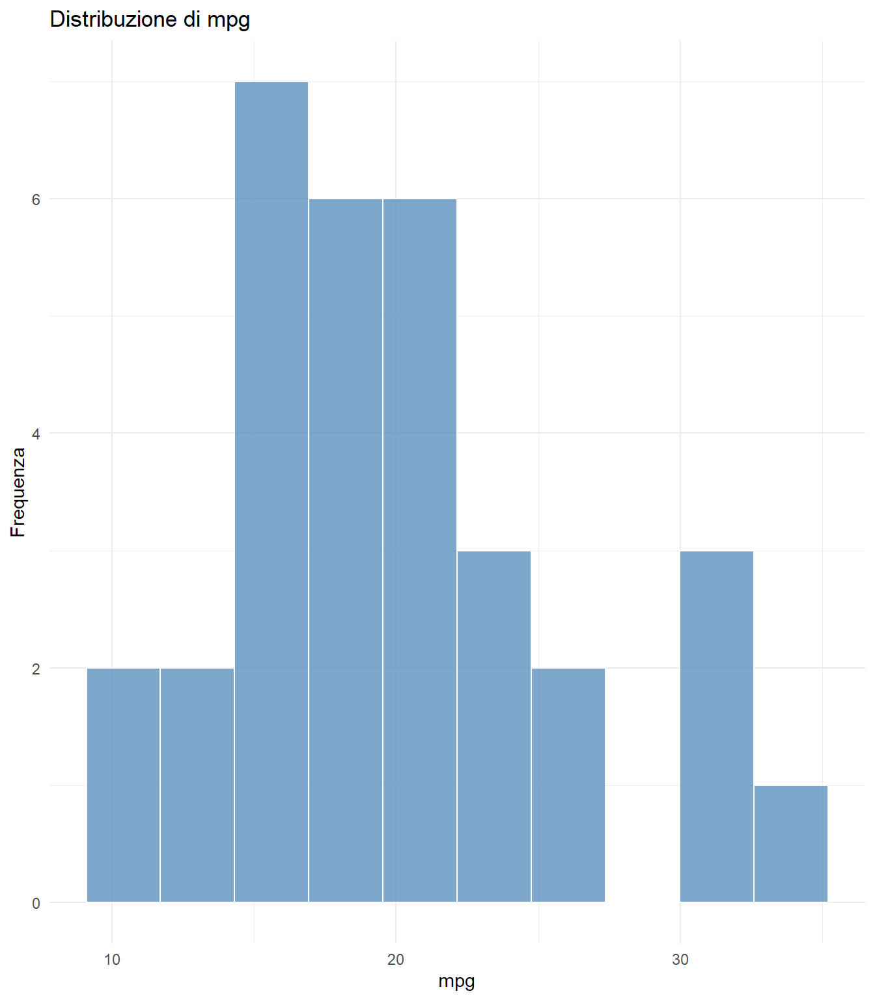
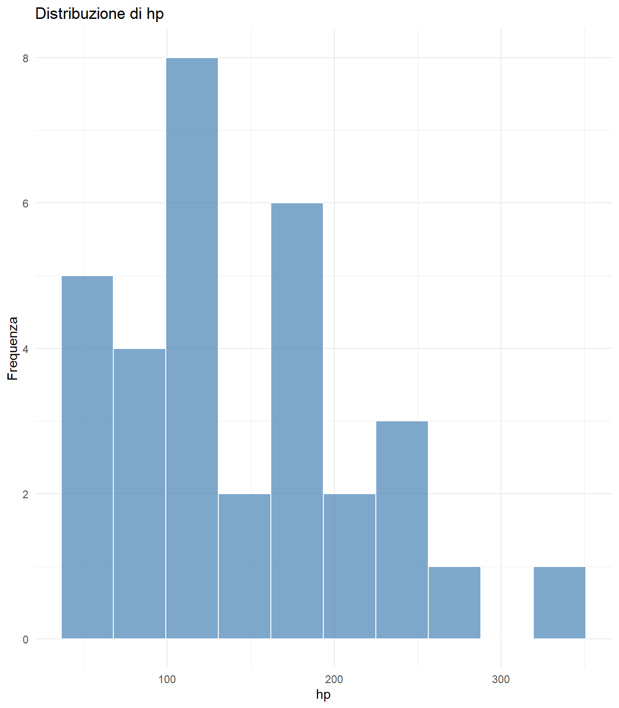
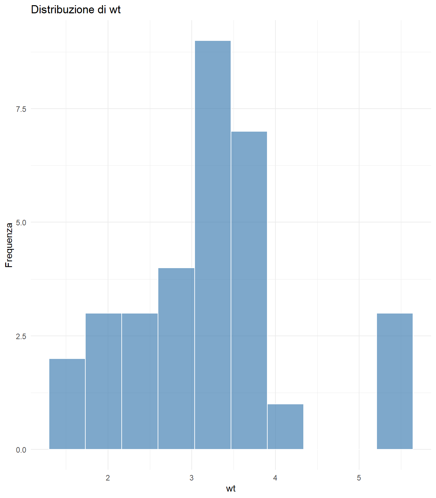
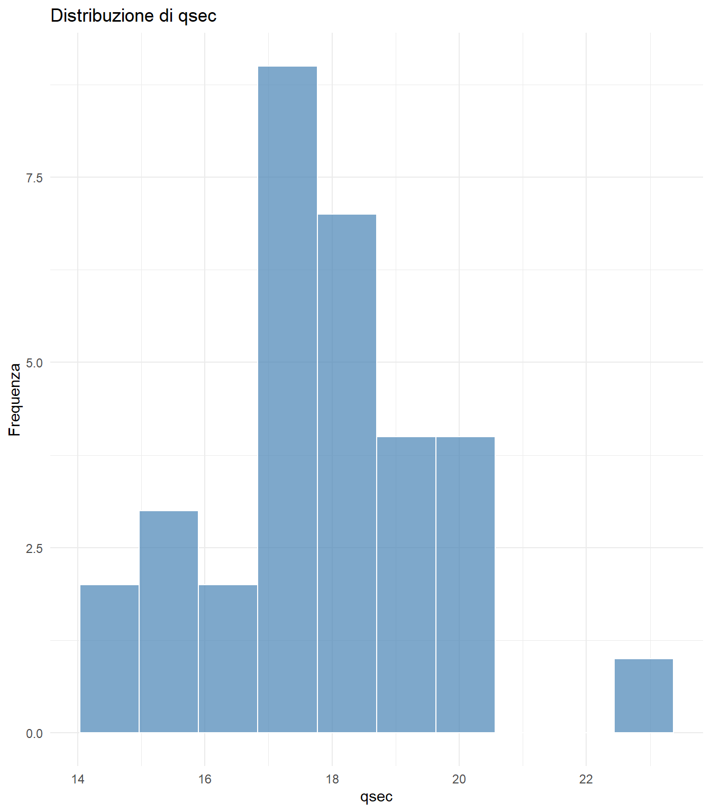
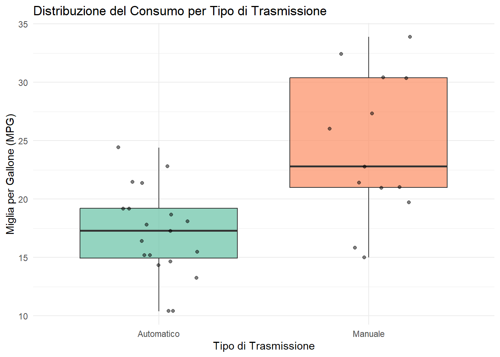
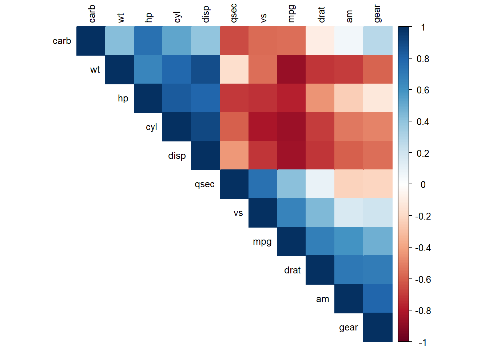
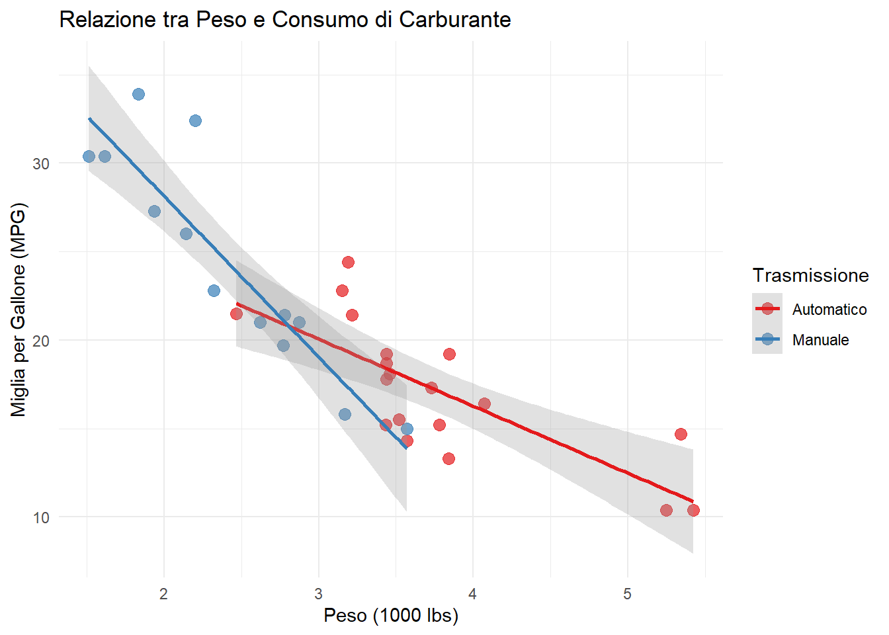

L’analisi esplorativa dei dati (EDA) è un approccio fondamentale per comprendere la struttura, i pattern e le caratteristiche dei nostri dati prima di procedere con analisi più complesse.
Preparazione dei Dati
Code
# Carica le librerielibrary(ggplot2)library(dplyr)library(plotly)library(DT)library(knitr)library(kableExtra)library(tidyr)library(tibble) # Per rownames_to_column# Corrplot se disponibileif(require(corrplot, quietly =TRUE)) { use_corrplot <-TRUE} else { use_corrplot <-FALSEcat("Nota: corrplot non disponibile, useremo ggplot per correlazioni\n")}# Imposta il tema per i graficitheme_set(theme_minimal())
Code
# Utilizziamo il dataset mtcars integrato in Rdata("mtcars")# Aggiungiamo alcune variabili categorichemtcars_extended <- mtcars %>%mutate(efficiency =case_when( mpg >=25~"Alta", mpg >=20~"Media",TRUE~"Bassa" ),engine_type =ifelse(vs ==1, "V-engine", "Straight"),transmission =ifelse(am ==1, "Manuale", "Automatico"),car_name =rownames(mtcars) ) %>%relocate(car_name, .before = mpg)# Mostra le prime righehead(mtcars_extended) %>%kable(caption ="Prime 6 righe del dataset mtcars esteso") %>%kable_styling(bootstrap_options =c("striped", "hover"))
Warning: 'xfun::attr()' is deprecated.
Use 'xfun::attr2()' instead.
See help("Deprecated")
Prime 6 righe del dataset mtcars esteso
car_name
mpg
cyl
disp
hp
drat
wt
qsec
vs
am
gear
carb
efficiency
engine_type
transmission
Mazda RX4
Mazda RX4
21.0
6
160
110
3.90
2.620
16.46
0
1
4
4
Media
Straight
Manuale
Mazda RX4 Wag
Mazda RX4 Wag
21.0
6
160
110
3.90
2.875
17.02
0
1
4
4
Media
Straight
Manuale
Datsun 710
Datsun 710
22.8
4
108
93
3.85
2.320
18.61
1
1
4
1
Media
V-engine
Manuale
Hornet 4 Drive
Hornet 4 Drive
21.4
6
258
110
3.08
3.215
19.44
1
0
3
1
Media
V-engine
Automatico
Hornet Sportabout
Hornet Sportabout
18.7
8
360
175
3.15
3.440
17.02
0
0
3
2
Bassa
Straight
Automatico
Valiant
Valiant
18.1
6
225
105
2.76
3.460
20.22
1
0
3
1
Bassa
V-engine
Automatico
Statistiche Descrittive
Panoramica Generale
Code
# Statistiche descrittive per le variabili numerichesummary_stats <- mtcars_extended %>%select(mpg, hp, wt, qsec, disp, drat) %>%summary()print(summary_stats)
mpg hp wt qsec
Min. :10.40 Min. : 52.0 Min. :1.513 Min. :14.50
1st Qu.:15.43 1st Qu.: 96.5 1st Qu.:2.581 1st Qu.:16.89
Median :19.20 Median :123.0 Median :3.325 Median :17.71
Mean :20.09 Mean :146.7 Mean :3.217 Mean :17.85
3rd Qu.:22.80 3rd Qu.:180.0 3rd Qu.:3.610 3rd Qu.:18.90
Max. :33.90 Max. :335.0 Max. :5.424 Max. :22.90
disp drat
Min. : 71.1 Min. :2.760
1st Qu.:120.8 1st Qu.:3.080
Median :196.3 Median :3.695
Mean :230.7 Mean :3.597
3rd Qu.:326.0 3rd Qu.:3.920
Max. :472.0 Max. :4.930
Warning: 'xfun::attr()' is deprecated.
Use 'xfun::attr2()' instead.
See help("Deprecated")
Table 1: Statistiche descrittive dettagliate
variabile
Media
Mediana
Dev.Std
Min
Max
mpg
20.09
19.20
6.03
10.40
33.90
hp
146.69
123.00
68.56
52.00
335.00
wt
3.22
3.33
0.98
1.51
5.42
qsec
17.85
17.71
1.79
14.50
22.90
disp
230.72
196.30
123.94
71.10
472.00
Distribuzione delle Variabili
Istogrammi delle Variabili Principali
Code
# Variabili da analizzarevars_to_plot <-c("mpg", "hp", "wt", "qsec")# Crea istogrammi separatifor(var in vars_to_plot) { p <-ggplot(mtcars_extended, aes(x = .data[[var]])) +geom_histogram(bins =10, fill ="steelblue", alpha =0.7, color ="white") +labs(title =paste("Distribuzione di", var),x = var, y ="Frequenza") +theme_minimal()print(p)}

Distribuzione delle variabili principali

Distribuzione delle variabili principali

Distribuzione delle variabili principali

Distribuzione delle variabili principali
Boxplot per Categoria
Code
ggplot(mtcars_extended, aes(x = transmission, y = mpg, fill = transmission)) +geom_boxplot(alpha =0.7) +geom_jitter(width =0.2, alpha =0.5) +scale_fill_brewer(type ="qual", palette ="Set2") +labs(title ="Distribuzione del Consumo per Tipo di Trasmissione",x ="Tipo di Trasmissione", y ="Miglia per Gallone (MPG)",fill ="Trasmissione") +theme(legend.position ="none")

Confronto distribuzione MPG per tipo di trasmissione
Analisi delle Correlazioni
Matrice di Correlazione
Code
# Seleziona variabili numerichenumeric_vars <- mtcars_extended %>%select(mpg, cyl, disp, hp, drat, wt, qsec, vs, am, gear, carb)# Calcola correlazionicor_matrix <-cor(numeric_vars)if(use_corrplot) {# Visualizza con corrplot se disponibilecorrplot(cor_matrix, method ="color", type ="upper", order ="hclust", tl.cex =0.8, tl.col ="black",col =colorRampPalette(c("#67001F", "#B2182B", "#D6604D", "#F4A582", "#FDDBC7", "#FFFFFF", "#D1E5F0", "#92C5DE", "#4393C3", "#2166AC", "#053061"))(200))} else {# Alternativa con ggplot cor_long <- cor_matrix %>%as.data.frame() %>%rownames_to_column("var1") %>%pivot_longer(-var1, names_to ="var2", values_to ="correlation")ggplot(cor_long, aes(x = var1, y = var2, fill = correlation)) +geom_tile(color ="white") +scale_fill_gradient2(low ="blue", mid ="white", high ="red", midpoint =0, name ="Correlazione") +theme_minimal() +theme(axis.text.x =element_text(angle =45, hjust =1),axis.title =element_blank()) +labs(title ="Matrice di Correlazione")}

Matrice di correlazione tra le variabili numeriche
Correlazioni più Forti
Code
# Trova le correlazioni più forticor_df <- cor_matrix %>%as.data.frame() %>%rownames_to_column("var1") %>%pivot_longer(-var1, names_to ="var2", values_to ="correlation") %>%filter(var1 != var2) %>%mutate(abs_cor =abs(correlation)) %>%arrange(desc(abs_cor)) %>%slice_head(n =10)cor_df %>%select(-abs_cor) %>%mutate(correlation =round(correlation, 3)) %>%kable(caption ="Le 10 correlazioni più forti tra le variabili") %>%kable_styling(bootstrap_options =c("striped", "hover"))
Warning: 'xfun::attr()' is deprecated.
Use 'xfun::attr2()' instead.
See help("Deprecated")
Le 10 correlazioni più forti tra le variabili
var1
var2
correlation
cyl
disp
0.902
disp
cyl
0.902
disp
wt
0.888
wt
disp
0.888
mpg
wt
-0.868
wt
mpg
-0.868
mpg
cyl
-0.852
cyl
mpg
-0.852
mpg
disp
-0.848
disp
mpg
-0.848
Visualizzazioni Interattive
Scatter Plot Interattivo
Code
# Versione semplificata del grafico interattivop <-ggplot(mtcars_extended, aes(x = wt, y = mpg, color = transmission)) +geom_point(size =3, alpha =0.7) +geom_smooth(method ="lm", se =TRUE, alpha =0.3) +scale_color_brewer(type ="qual", palette ="Set1") +labs(title ="Relazione tra Peso e Consumo di Carburante",x ="Peso (1000 lbs)", y ="Miglia per Gallone (MPG)",color ="Trasmissione") +theme_minimal()# Prova a renderlo interattivo, altrimenti mostra staticotryCatch({ggplotly(p)}, error =function(e) {print(p)cat("Nota: Visualizzazione statica mostrata al posto di quella interattiva\n")})
`geom_smooth()` using formula = 'y ~ x'
`geom_smooth()` using formula = 'y ~ x'

Relazione interattiva tra peso e consumo
Nota: Visualizzazione statica mostrata al posto di quella interattiva
Tabella Interattiva Completa
Code
# Crea una tabella interattiva con tutti i datimtcars_extended %>%select(car_name, mpg, hp, wt, efficiency, transmission, engine_type) %>%datatable(caption ="Dataset completo con filtri e ricerca",options =list(pageLength =10,scrollX =TRUE,filter ="top" ),filter ="top" ) %>%formatRound(columns =c("mpg", "hp", "wt"), digits =1)
Conclusioni dell’Analisi Esplorativa
Dall’analisi esplorativa emergono diversi pattern interessanti:
Relazione Peso-Consumo: Esiste una forte correlazione negativa (-0.87) tra peso e consumo
Efficienza per Trasmissione: Le auto con trasmissione manuale tendono ad essere più efficienti
Potenza vs Efficienza: Auto più potenti tendono a consumare di più
Distribuzione Variabili: La maggior parte delle variabili mostra distribuzioni ragionevolmente normali
Questi insight guideranno le analisi successive e la costruzione di modelli predittivi.
Source Code
---title: "Analisi Esplorativa dei Dati"format: html: code-fold: show toc: true---# Introduzione all'Analisi EsplorativaL'analisi esplorativa dei dati (EDA) è un approccio fondamentale per comprendere la struttura, i pattern e le caratteristiche dei nostri dati prima di procedere con analisi più complesse.## Preparazione dei Dati```{r setup}#| warning: false#| message: false# Carica le librerielibrary(ggplot2)library(dplyr)library(plotly)library(DT)library(knitr)library(kableExtra)library(tidyr)library(tibble) # Per rownames_to_column# Corrplot se disponibileif(require(corrplot, quietly =TRUE)) { use_corrplot <-TRUE} else { use_corrplot <-FALSEcat("Nota: corrplot non disponibile, useremo ggplot per correlazioni\n")}# Imposta il tema per i graficitheme_set(theme_minimal())``````{r data-prep}# Utilizziamo il dataset mtcars integrato in Rdata("mtcars")# Aggiungiamo alcune variabili categorichemtcars_extended <- mtcars %>%mutate(efficiency =case_when( mpg >=25~"Alta", mpg >=20~"Media",TRUE~"Bassa" ),engine_type =ifelse(vs ==1, "V-engine", "Straight"),transmission =ifelse(am ==1, "Manuale", "Automatico"),car_name =rownames(mtcars) ) %>%relocate(car_name, .before = mpg)# Mostra le prime righehead(mtcars_extended) %>%kable(caption ="Prime 6 righe del dataset mtcars esteso") %>%kable_styling(bootstrap_options =c("striped", "hover"))```## Statistiche Descrittive### Panoramica Generale```{r summary-stats}# Statistiche descrittive per le variabili numerichesummary_stats <- mtcars_extended %>%select(mpg, hp, wt, qsec, disp, drat) %>%summary()print(summary_stats)```### Tabella Dettagliata delle Statistiche```{r detailed-stats}#| label: tbl-stats#| tbl-cap: "Statistiche descrittive dettagliate"stats_table <- mtcars_extended %>%select(mpg, hp, wt, qsec, disp) %>%summarise(across(everything(), list(Media =~round(mean(.x, na.rm =TRUE), 2),Mediana =~round(median(.x, na.rm =TRUE), 2),`Dev.Std`=~round(sd(.x, na.rm =TRUE), 2),Min =~round(min(.x, na.rm =TRUE), 2),Max =~round(max(.x, na.rm =TRUE), 2) ), .names ="{.col}_{.fn}") ) %>%pivot_longer(everything(), names_to ="stat", values_to ="value") %>%separate(stat, into =c("variabile", "statistica"), sep ="_") %>%pivot_wider(names_from = statistica, values_from = value)stats_table %>%kable() %>%kable_styling(bootstrap_options =c("striped", "hover", "condensed"))```## Distribuzione delle Variabili### Istogrammi delle Variabili Principali```{r histograms}#| fig-height: 8#| fig-cap: "Distribuzione delle variabili principali"# Variabili da analizzarevars_to_plot <-c("mpg", "hp", "wt", "qsec")# Crea istogrammi separatifor(var in vars_to_plot) { p <-ggplot(mtcars_extended, aes(x = .data[[var]])) +geom_histogram(bins =10, fill ="steelblue", alpha =0.7, color ="white") +labs(title =paste("Distribuzione di", var),x = var, y ="Frequenza") +theme_minimal()print(p)}```### Boxplot per Categoria```{r boxplots}#| fig-cap: "Confronto distribuzione MPG per tipo di trasmissione"ggplot(mtcars_extended, aes(x = transmission, y = mpg, fill = transmission)) +geom_boxplot(alpha =0.7) +geom_jitter(width =0.2, alpha =0.5) +scale_fill_brewer(type ="qual", palette ="Set2") +labs(title ="Distribuzione del Consumo per Tipo di Trasmissione",x ="Tipo di Trasmissione", y ="Miglia per Gallone (MPG)",fill ="Trasmissione") +theme(legend.position ="none")```## Analisi delle Correlazioni### Matrice di Correlazione```{r correlation-matrix}#| fig-cap: "Matrice di correlazione tra le variabili numeriche"# Seleziona variabili numerichenumeric_vars <- mtcars_extended %>%select(mpg, cyl, disp, hp, drat, wt, qsec, vs, am, gear, carb)# Calcola correlazionicor_matrix <-cor(numeric_vars)if(use_corrplot) {# Visualizza con corrplot se disponibilecorrplot(cor_matrix, method ="color", type ="upper", order ="hclust", tl.cex =0.8, tl.col ="black",col =colorRampPalette(c("#67001F", "#B2182B", "#D6604D", "#F4A582", "#FDDBC7", "#FFFFFF", "#D1E5F0", "#92C5DE", "#4393C3", "#2166AC", "#053061"))(200))} else {# Alternativa con ggplot cor_long <- cor_matrix %>%as.data.frame() %>%rownames_to_column("var1") %>%pivot_longer(-var1, names_to ="var2", values_to ="correlation")ggplot(cor_long, aes(x = var1, y = var2, fill = correlation)) +geom_tile(color ="white") +scale_fill_gradient2(low ="blue", mid ="white", high ="red", midpoint =0, name ="Correlazione") +theme_minimal() +theme(axis.text.x =element_text(angle =45, hjust =1),axis.title =element_blank()) +labs(title ="Matrice di Correlazione")}```### Correlazioni più Forti```{r strong-correlations}# Trova le correlazioni più forticor_df <- cor_matrix %>%as.data.frame() %>%rownames_to_column("var1") %>%pivot_longer(-var1, names_to ="var2", values_to ="correlation") %>%filter(var1 != var2) %>%mutate(abs_cor =abs(correlation)) %>%arrange(desc(abs_cor)) %>%slice_head(n =10)cor_df %>%select(-abs_cor) %>%mutate(correlation =round(correlation, 3)) %>%kable(caption ="Le 10 correlazioni più forti tra le variabili") %>%kable_styling(bootstrap_options =c("striped", "hover"))```## Visualizzazioni Interattive### Scatter Plot Interattivo```{r interactive-scatter}#| fig-cap: "Relazione interattiva tra peso e consumo"# Versione semplificata del grafico interattivop <-ggplot(mtcars_extended, aes(x = wt, y = mpg, color = transmission)) +geom_point(size =3, alpha =0.7) +geom_smooth(method ="lm", se =TRUE, alpha =0.3) +scale_color_brewer(type ="qual", palette ="Set1") +labs(title ="Relazione tra Peso e Consumo di Carburante",x ="Peso (1000 lbs)", y ="Miglia per Gallone (MPG)",color ="Trasmissione") +theme_minimal()# Prova a renderlo interattivo, altrimenti mostra staticotryCatch({ggplotly(p)}, error =function(e) {print(p)cat("Nota: Visualizzazione statica mostrata al posto di quella interattiva\n")})```## Tabella Interattiva Completa```{r interactive-table}# Crea una tabella interattiva con tutti i datimtcars_extended %>%select(car_name, mpg, hp, wt, efficiency, transmission, engine_type) %>%datatable(caption ="Dataset completo con filtri e ricerca",options =list(pageLength =10,scrollX =TRUE,filter ="top" ),filter ="top" ) %>%formatRound(columns =c("mpg", "hp", "wt"), digits =1)```## Conclusioni dell'Analisi EsplorativaDall'analisi esplorativa emergono diversi pattern interessanti:1. **Relazione Peso-Consumo**: Esiste una forte correlazione negativa (-0.87) tra peso e consumo2. **Efficienza per Trasmissione**: Le auto con trasmissione manuale tendono ad essere più efficienti3. **Potenza vs Efficienza**: Auto più potenti tendono a consumare di più4. **Distribuzione Variabili**: La maggior parte delle variabili mostra distribuzioni ragionevolmente normaliQuesti insight guideranno le analisi successive e la costruzione di modelli predittivi.